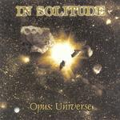

| Artist: | In Solitude |
| Title: | Opus Universe |
| Label: | Recital BOX007 |
| Length(s): | 58 minutes |
| Year(s) of release: | 2000 |
| Month of review: | [03/2001] |
| 1) | Awakening | 1.39 |
| 2) | Alpha Event | 4.23 |
| 4) | In The Depths | 5.30 |
Journey through the black hole
| 5) | Legacy Of A Dying Star | 5.13 |
| 7) | Beyond | 4.37 |
| 8) | Empire Of Eternities | 4.13 |
| 9) | Gravity's Triumph | 3.35 |
| 10) | Requiem For The Stars | 3.43 |
| 11) | Entropy | 4.31 |
| 13) | Omega Event | 5.41 |
Stellar Phase has a strong drive, but on the other hand is simply hardrock with a strong keyboard presence in the back functioning mostly as strings. The rhythm guitar work is quite good on this one and at times the electric guitar rings out. The vocal part is quite catchy again.
Time for some more atmospheric stuff on In The Depths, which has a good memorable melody. Some moody acoustic guitar and subtle guitar work is alternated with a mid-tempo chorus. The ticking of the drummer is a bit too prominent in the vocal parts. The intermezzo features cosmic keyboards.
Journey Through The Black Hole (getting thoughs of Ayreon here) is the opus of the album. Totalling over 15 minutes, it consists of three parts. The first of these is the metallic Legacy Of A Dying Star. Typical strident vocal choirs in this track. Near The Event Horizon is a slow plodding track with a strong guitar presence and careful tempo changes. This track has one of the most memorable melodies, mirrored in both the chorus as well as the guitar work. The melody has similarities to Friday On My Mind. The conclusion of the track is a poppy one with strident choruses, but on the whole a bit too repetitive. Still a nice accessible track.
Ana Lara of Oratory sings along on another catchy track Gravity's Triumph, which also has its share of cliche oh-hu-ohs. The drummer has a tendency to perform repetitive clear ticks, and this sound is much too prominent in the many of the songs. It comes out above much of the rest of the music.
Requiem For The Stars opens tritely and again has those strident metal choruses. I am not fond of those, it gives the music such a "let's all singalong" character.
Entropy opens with nice bass work by Borges, but the music soon turns to plodding progmetal again. The song does not add much to the foregoing, although the final is quite nice and bombastic.
Strong drive and good melodies we find in the two final tracks. The first of these, The Decay, is one of the highpoints on this album with its distinctive melody. The Omega Event, the counterpart of the Alpha Event, opens nice and like I said enjoys a good drive, but the band falls back into catchy choruses on this one, making it too similar to previous songs. There are some nice melodic twists in this one (Not The End, Not The End). The end of the song signifies the end of all.